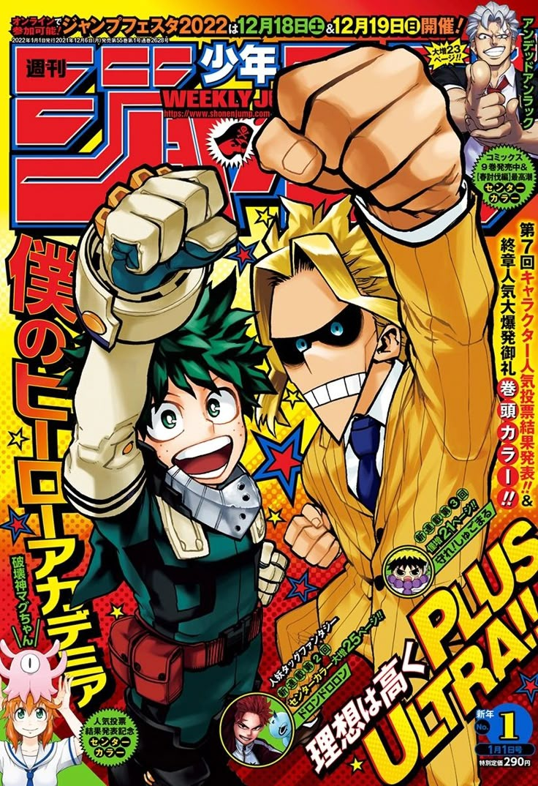
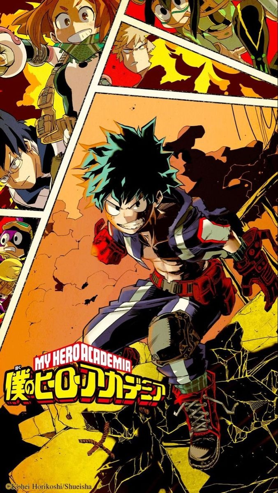
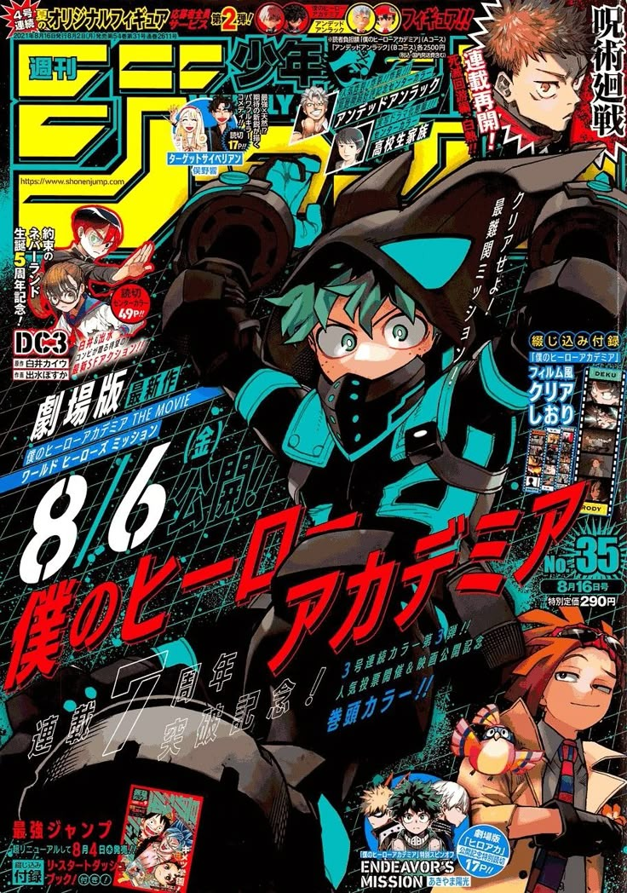

Final Project – English IV
By: Giovany, Alex, Skarlet
Explore Project ↓Introduction to My Hero Academia and English structures.

My Hobbies and Free Time
We love watching My Hero Academia...

Past Experiences
Last year, we discovered My Hero Academia...

My Daily Routine
On weekdays, we wake up early and check new episodes...

Future Goals
We plan to use English IV grammar to...

Speaking Presentation
Writing
This text uses passive voice, past simple, used to, and future structures.

Passive Voice Example
My Hero Academia is produced by Studio Bones.
The series is watched by millions worldwide.
New episodes are released every Saturday.
